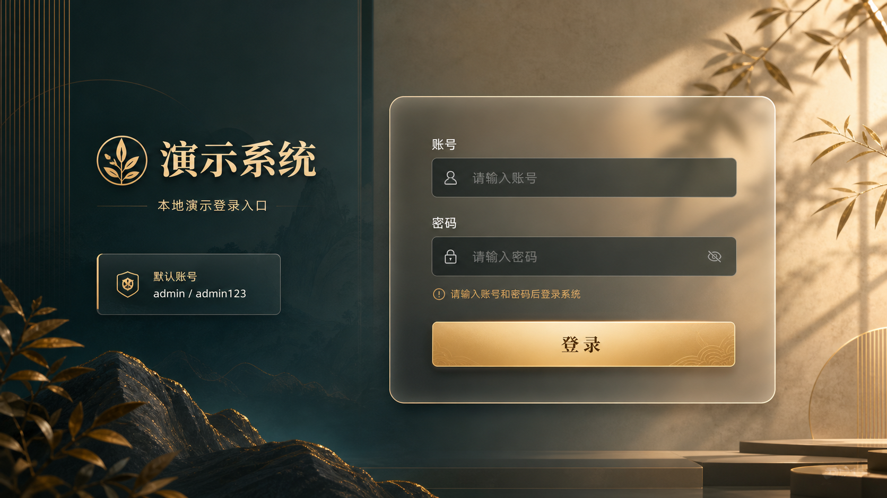
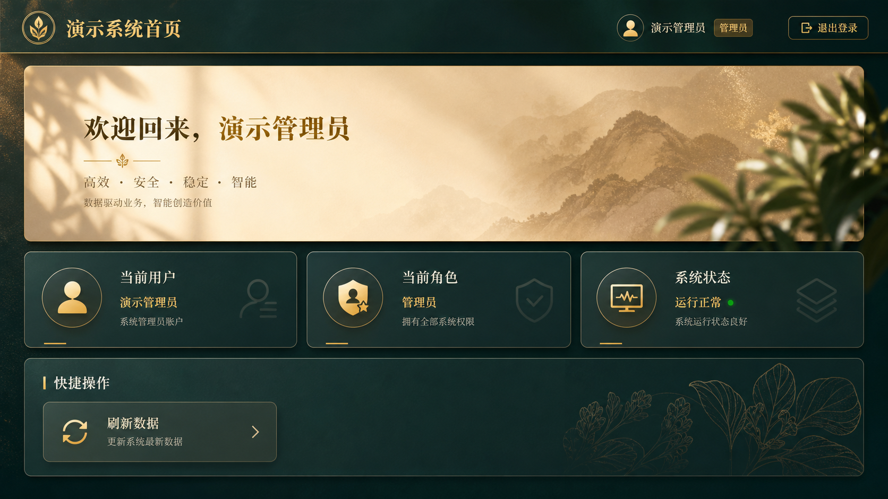

现在我想开发一个PC网页。 1、前端代码仓库：[luxuyuan-candi/yanshi_fe.git](https://github.com/luxuyuan-candi/yanshi_fe.git) 2、后端代码仓库：[luxuyuan-candi/yanshi_be.git](https://github.com/luxuyuan-candi/yanshi_be.git) 3、现在通过对话的方式，我需要先生成一个页面功能的设计MD文档，并保存在后端代码仓库上。
From Prompt To Product
演示系统网页制作过程
本页面将本次对话中的核心文字需求，按照实际推进流程整合为一个可演示的项目过程说明。内容覆盖从最初的页面与仓库要求，到文档产出、前后端实现、本地部署、GitHub 推送、登录问题修复，以及后续 UI 升级与素材生产。
项目范围
PC 网页，包含登录页与首页两个页面。
技术约束
前端为纯 HTML，后端使用 FastAPI，数据库使用本地 SQLite，本地部署运行。
最终目标
完成需求文档、部署文档、代码实现、仓库提交、UI 升级与演示素材整理。
一、需求原文整理
目前这个网页就两个页面，一个登陆和一个首页。
现在需要通过对话方式，生成一个部署MD文件，同样保存在后端代码仓库上。
部署要求： 1、后端使用 python 的 fastapi。 2、采用本地部署。 3、前段只需要 HTML 文件。 4、数据库采用本地的 sqlite。
现在根据两个MD文档要求，生成前后端代码，并完成提交。
帮我推送到github仓库
刚刚尝试登陆这个网页，发现无法登陆。
现在我想优化的网页的UI。要求如下： 1、先根据网页内容和功能，保持功能不动的情况下，先用image2生成网页UI的美化参考图。 2、根据参考图，使用image2生成参考图的背景图。以及图中涉及的图标图，图标生成时候，统一采用黄色的背景图，然后用 [$adobe-photoshop](app://connector_69312da8e4dc81919370cb86fd172b6c) 工具进行图标的扣取，保证图标背景为空。 3、根据参考图，结合已经生成的背景图和图标，完成每个页面的复刻。
二、制作产物
- 页面功能设计文档：明确登录页与首页的功能结构与接口草案。
- 本地部署文档：明确 FastAPI、本地 HTML、SQLite 的部署方式。
- 后端代码：FastAPI + SQLite 的登录闭环实现。
- 前端代码：登录页、首页、登录态处理、退出逻辑。
- UI 参考图：用于定义整体视觉风格。
- 背景图与图标素材：用于页面复刻。
- 修复记录：包括 file 协议下登录失败的兼容处理。
三、UI 升级素材预览

登录页参考图
定义了左右分栏、金色品牌标识、玻璃化登录面板、账号提示卡和暖光质感。

首页参考图
定义了顶部品牌区、欢迎横幅、三张状态卡片和快捷操作面板的整体层次。
登录页背景图
拆出独立背景后，可在页面中直接作为氛围层使用，而不是完全依赖 CSS 渐变。
首页背景图
用于强化首页的高端展示感，并承接欢迎区和下方卡片内容的视觉节奏。
四、最终成果总结
两个页面全部打通： 登录页可提交账号密码并建立登录态； 首页可读取当前用户信息、加载概览内容并退出登录。
文档、代码、提交、GitHub 推送、本地部署说明、问题修复和 UI 升级都已经形成闭环，项目具备继续扩展业务模块的基础。